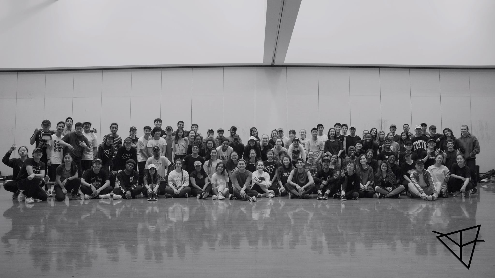

About
PRSM came into existence to fill a void in the North Carolina community that grew out of the loss of many of North Carolina’s initial urban dance community organizations, KODACHROME NC, More Than Dance, and Collective Uth. The community was aching for the re-establishment of an entity that could provide a consistent place for the community to build connections and grow together. The founding intention of PRSM was to fulfill that need and eventually bring something that none of our predecessors had done before.
The idea for the name “PRSM” arose because a prism can both split a beam of light into many different colors, while also taking this same spectrum and recombining it into one beam of light. This is a metaphor for our organization, which highlights the NC dance community and helps our dancers share outside of NC, while also bringing in dancers from outside NC to help the community grow.
